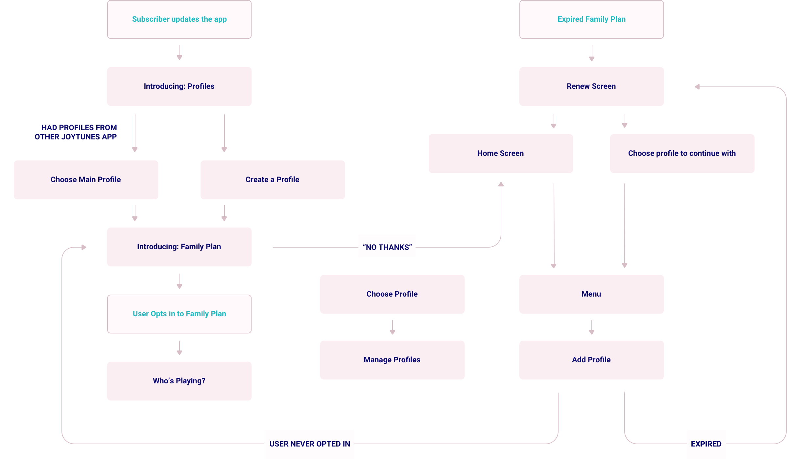

JoyTunes
JoyTunes is the company behind Simply Piano, the leading app in the world for teaching beginners how to play the piano. I was a Senior Product Designer there between 2018 - 2019.
Responsibilities
- Product Design
- UX Research
Growth teams goals
In my first months at JoyTunes, my responsibilities were mostly around income and conversion increase. By identifying the right problems, I managed to promote a few simple moves that were significant to the company.
Making the value proposition clear & visual
One of my first tasks in JoyTunes was to redesign the subscription screen. After identifying crucial UX flaws, looking for inspiration, and running a few iterations, we came up with a more visual and simple subscription screen.
The goals of the screen were to make sure that the value proposition is very clear, make the purchasing experience frictionless, and the choice between the subscription tiers simple.
The new screen worked well and managed to increase conversion. I shared more about this project in our Medium publication to improve our employer branding.
Getting more people to listen to our subscription offer
Once the subscription screen performed better, We saw that the only way to reach them is by trying to enter a locked course. I suggested to add a CTA button to a few places with the right context for it, such as the locked songs library or the menu, which seemed to me like the natural place for a subscription button.
This change increased the number of people who see the subscription and the overall conversion rate.
Finding critical points of revenue loss, and solving them
When looking at the data, we saw that many users who purchase the yearly plan, cancel their subscription before their free trial ends. I saw this as an opportunity and looked for inspiration to see how other companies approach this. Eventually, I suggested to test a new pricing method:
Basically, the idea is to offer a cheaper pricing plan that doesn't include trial, next to the regular price one that does include a 7-day trial.
The experiment seemed to work as many people saw an opportunity to save money by buying the ‘Pay Now’ plan, subscribers could pay less for the same subscription, and the cancellations of new subscribers decreased.
Spotlight Project: Family Plan
Defining a very strategic move while minimizing developer’s time
I was in charge of structuring and designing a new pricing tier named ‘Family Plan’.
The goal of this task was to increase retention and open a new pricing tier that will increase the company’s yearly revenue.
It was a big and important project, and we wanted to A/B test a few variations of it. Since pricing tiers are rather complicated in native iOS apps, there were many edge cases to take care of for each bucket in the experiment.
As part of my responsibility, I created the architecture and the design for this feature. My goal was to find great solutions that would make it easy for the developers to implement, and intuitive for the users.
The project encouraged many of our users to create a family plan subscription for their friends and family. This both increased the revenue from them and their retention rate.